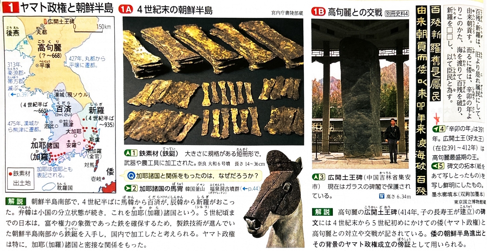
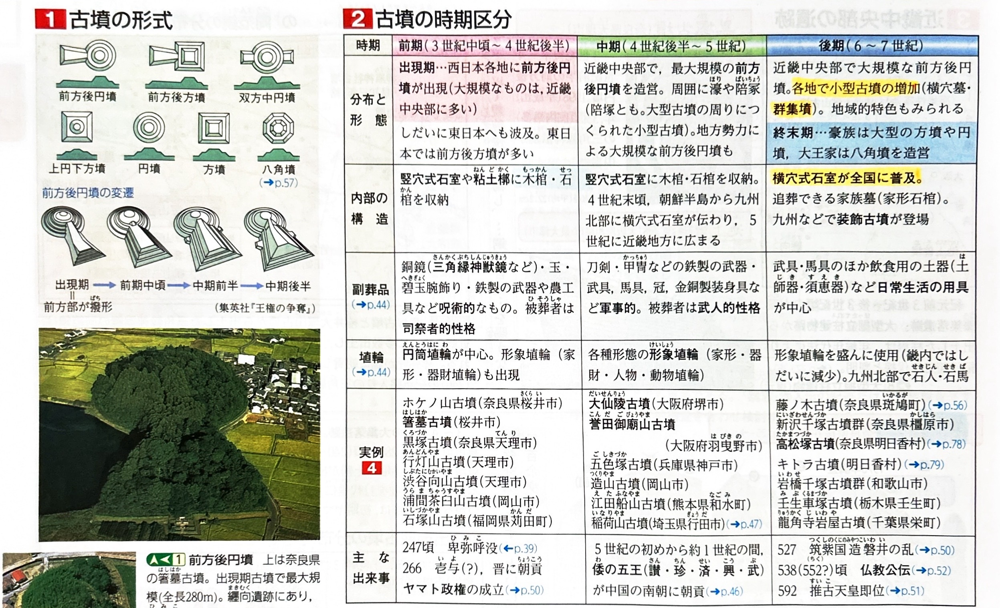
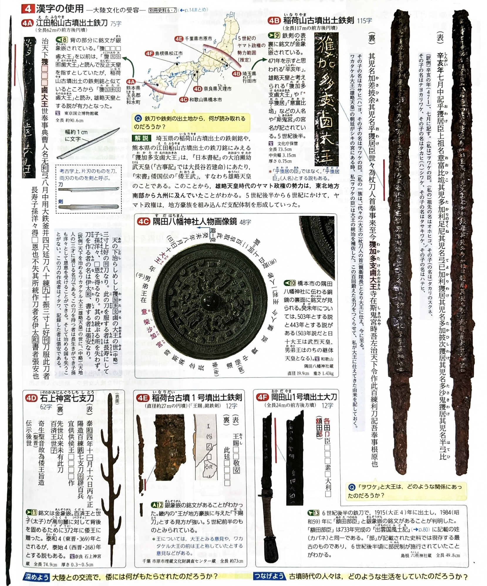

003 古墳文化の展開（古墳時代）
年表で見る 古墳時代と東アジアの動向
3世紀中頃〜後半
西日本を中心に前方後円墳などの古墳が出現（古墳時代の始まり）。
出現期最大の古墳は奈良県桜井市にある箸墓古墳であり、ヤマト政権の成立を示すとされる。
4世紀
朝鮮半島では、北部の高句麗が強大化。南部では馬韓から百済、辰韓から新羅が建国され、弁韓は加耶（加羅）諸国として分立した。
ヤマト政権は鉄資源を求めて加耶方面へ進出した。
391年（4世紀末）
高句麗の広開土王（好太王）の碑文に、この年以降、海を渡ってきた「倭」が百済や新羅を破り臣従させ、高句麗と交戦したことが記録されている。
5世紀
中国（南朝）の歴史書『宋書』倭国伝に、讃・珍・済・興・武という倭の五王が朝貢したと記される。
「武」は雄略天皇（ワカタケル大王）に比定されており、大将軍の称号を得て朝鮮半島や国内での権威を強めようとした。

527年（6世紀前半）
新羅と結んだ筑紫国造の磐井がヤマト政権に対し反乱を起こす（磐井の乱）。
鎮圧後、ヤマト政権は九州北部に直轄地である屯倉（みやけ）を設置し、地方支配を強化した。
テーマ別詳細（古墳の変遷・生活・ヤマト政権）
-
古墳の変遷（前期・中期・後期）
【前期】（3世紀中頃〜4世紀）
主に近畿地方の丘陵に造営。代表例は前方後円墳（箸墓古墳など）。内部は長い木棺を竪穴式石室に埋葬し、副葬品として三角縁神獣鏡などの銅鏡や腕輪など、呪術的（宗教的）な性格が強いものが納められた。
【中期】（4世紀末〜5世紀）
平野部に巨大な前方後円墳が造営される。大仙陵古墳（仁徳天皇陵古墳）や誉田御廟山古墳（応神天皇陵古墳）が代表的。 副葬品は鉄製武器や馬具など、軍事的な性格に変化した。墳丘には円筒埴輪や、人物・動物などをかたどった形象埴輪が立てられた。
【後期】（6世紀〜7世紀）
有力農民層にまで古墳造営が広がり、山間部などに小型の円墳が密集する群集墳が多数造られた。内部は朝鮮半島の強い影響を受けた横穴式石室となり、家族墓として追葬が可能となった。また、石室内に彩色壁画を描く装飾古墳も九州や東日本に現れた。
-
古墳時代の人々の生活と信仰
豪族は環濠をめぐらせた居館に住み、民衆は竪穴住居に住んだ。この時代から住居内に朝鮮半島由来のカマドが設けられるようになった。
土器は、弥生土器の系譜を引く赤焼きの土師器（はじき）に加え、朝鮮半島から伝わったロクロを用い高温で焼かれた硬質で灰色の須恵器（すえき）が使われた。
農耕儀礼として、春には豊作を祈る祈年祭（としごいのまつり）、秋には収穫を感謝する新嘗祭（にいなめのまつり）が行われた。また、鹿の骨を焼いて吉凶を占う太占の法（ふとまにのほう）や、熱湯に手を入れさせて火傷の有無で真偽を判定する盟神探湯（くかたち）などの呪術的風習が存在した。 -
ヤマト政権の拡大と氏姓制度
5世紀末には、ヤマト政権の支配が関東から九州中部にまで拡大した。その証拠として、埼玉県の稲荷山古墳出土の鉄剣と、熊本県の江田船山古墳出土の鉄刀の両方に「獲加多支鹵（ワカタケル）大王」の名が刻まれていた。
ヤマト政権は、血縁や政治的関係による組織である「氏（うじ）」と、大王から与えられた身分的称号である「姓（かばね）」を組み合わせた氏姓制度で豪族を編成した。葛城氏や蘇我氏など有力豪族には「臣（おみ）」、大伴氏や物部氏などの特定の職掌を持つ豪族には「連（むらじ）」の姓が与えられた。
大王の直轄地を屯倉（みやけ）、直轄民を名代・子代（なしろ・こしろ）と呼び、豪族の私有地は田荘（たどころ）、私有民は部曲（かきべ）と呼ばれた。地方豪族は国造（くにのみやつこ）などに任命され、地方支配を任された。 -
大陸文化の受容と渡来人の活躍
5世紀以降、朝鮮半島からの渡来人により、須恵器の製作や機織り、金属工芸などの新技術が伝えられた。
代表的な渡来人として、養蚕・機織りを伝えたとされる弓月君（秦氏の祖）、文筆記録などに従事した阿知使主（東漢氏の祖）や王仁（西文氏の祖）がいる。
6世紀には百済から五経博士が来日し儒教を伝え、漢字の使用も広まった。
また、6世紀半ばには百済の聖明王から欽明天皇へ仏教が公伝した（538年または552年説）。仏教受容をめぐり、崇仏派の蘇我氏と排仏派の物部氏が激しく対立した。
確認クイズ